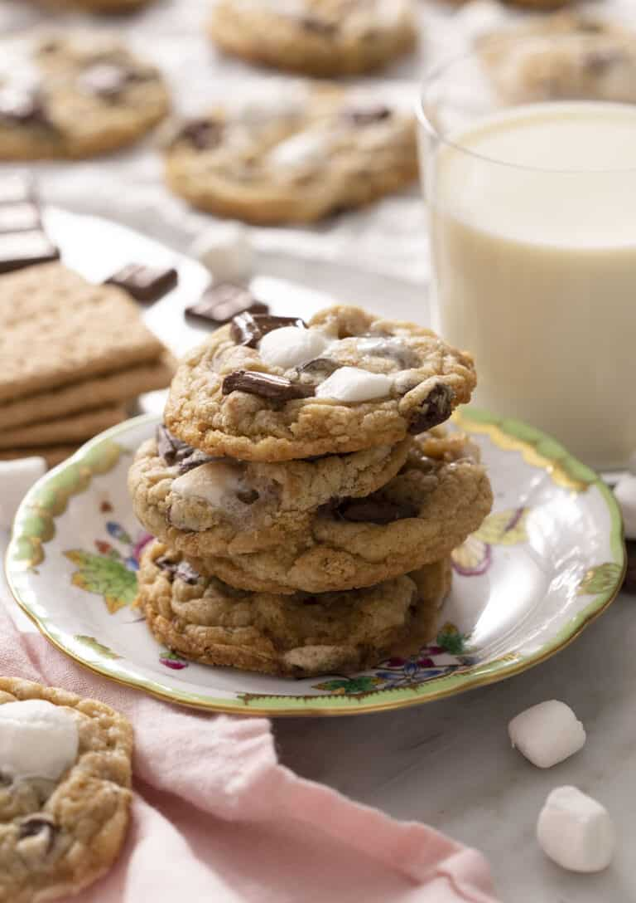

S'mores Cookies

Description:
Best thing ever: s’mores cookies! melty toasted marshmallow, crunchy Graham crackers and lots of chocolate all in a chewy cookie. It’s a MUST make recipe!
Ingredients:
- 1 1/2 cups all-purpose flour
- 1/2 tsp. baking powder
- 1/2 tsp. baking soda
- 1 tsp corn starch
- 3/4 cup semisweet chocolate chips
- 10 tbsp unsalted butter
- 1/4 cup granulated sugar
- 1/2 cup light brown sugar
- 1 egg
- 1 tsp vanilla extract
- 1/4 tsp salt
- 1 cup mini marshmallows
- 1 bar Hershey's Chocolate
- 4 Graham crackers
Directions:
- Roughly chop the Graham crackers and Hershey's bar, then tear the mini marshmallows in half. These marshmallows are one of the best parts of the cookie but they will puff up and get a bit out of control if you don't halve them.
- Combine the flour, salt, baking powder, baking soda, and cornstarch in a bowl then whisk together and set aside.
- Using a stand or hand mixer, beat butter and sugars in a bowl until creamy, about 2 minutes. Add in egg and vanilla and until combined. Scrape the bowl down and mix once more.
- Gradually add flour mixture to butter mixture, beating on low speed until just combined.
- Reserve a handful of the torn marshmallows and set aside then add the remaining marshmallows, chocolate chips, and Graham crackers to the dough and mix on low until just combined (do not over-beat).
- Refrigerate dough for an hour or more.
- Heat oven to 350F. Portion out roughly two tablespoon sized pieces of dough. Roll into balls and place on a parchment-lined baking sheet, spacing about 2 inches apart.
- Bake at 350F for 8 minutes then top the cookies with the reserved marshmallow and Hershey's bar pieces then return to the oven for 2-3 minutes to finish baking. IF a some cookies had a blowout because of a few too many marshmallows to you can corral them back together with a round cookie cutter or a knife.
Home